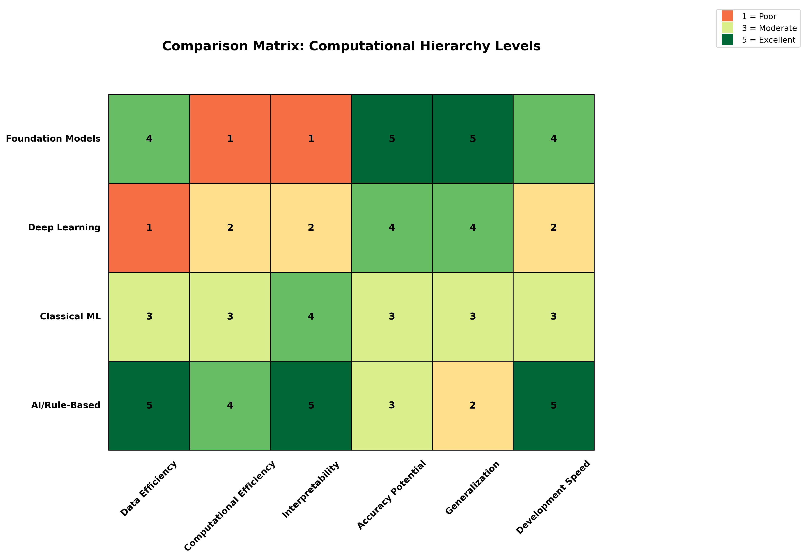

flowchart TD
A["<b>Artificial Intelligence (AI)</b><br>Any computational algorithm<br>that processes data intelligently"]
B["<b>Machine Learning (ML)</b><br>Algorithms that learn<br>patterns from data"]
C["<b>Deep Learning (DL)</b><br>Neural networks with<br>multiple layers"]
D["<b>Foundation Models (FM)</b><br>Large pre-trained models<br>with transfer learning"]
A --> B
B --> C
C --> D
style A fill:#e1f5fe
style B fill:#b3e5fc
style C fill:#81d4fa
style D fill:#4fc3f7
Visual Resources
This explainer includes visualization diagrams. To generate them, run:
cd book/extras/scripts
python visualize_ai_hierarchy.pyOverview
In geospatial data science, we often encounter terms like AI, Machine Learning, Deep Learning, and Foundation Models. These concepts form a nested hierarchy, where each level represents a more specialized subset of the previous one. This explainer clarifies these relationships and provides concrete examples from remote sensing and Earth observation.
The Hierarchy Explained
The Nested Nature
Each category is a subset of the one above it:
- All Foundation Models are Deep Learning models
- All Deep Learning is Machine Learning
- All Machine Learning is Artificial Intelligence
- Not all AI is Machine Learning (some AI uses rules or heuristics)
Level 1: Artificial Intelligence (AI)
Definition: Any computational algorithm designed to process data and make decisions or predictions in an intelligent manner.
Geospatial AI Examples
Rule-Based Classification
# Simple threshold-based water detection
def detect_water_ndwi(green_band, nir_band):
"""Rule-based water detection using NDWI threshold"""
ndwi = (green_band - nir_band) / (green_band + nir_band)
water_mask = ndwi > 0.3 # Fixed threshold rule
return water_maskExpert Systems for Land Use
- ERDAS IMAGINE Knowledge Engineer: Rule-based classification
- eCognition Rule Sets: Object-based image analysis with expert rules
- Threshold-based indices: NDVI for vegetation, NDBI for built-up areas
Geometric Algorithms
- Viewshed analysis: Line-of-sight calculations
- Buffer operations: Distance-based spatial analysis
- Spatial interpolation: IDW, Kriging (statistical but not ML)
Level 2: Machine Learning (ML)
Definition: Algorithms that automatically learn patterns from data without being explicitly programmed for specific rules.
Classical ML in Remote Sensing
Supervised Classification
# Random Forest for land cover classification
from sklearn.ensemble import RandomForestClassifier
# Traditional approach: hand-crafted features
features = ['mean_red', 'mean_green', 'mean_blue', 'mean_nir',
'ndvi', 'ndwi', 'texture_homogeneity']
rf_classifier = RandomForestClassifier(n_estimators=100)
rf_classifier.fit(training_features, training_labels)Common ML Algorithms in Geospatial
Random Forest
- Land cover classification
- Tree species identification
- Crop type mapping
Support Vector Machines (SVM)
- Urban area extraction
- Cloud detection
- Change detection
Gradient Boosting (XGBoost)
- Yield prediction
- Soil property mapping
- Poverty estimation
k-Nearest Neighbors (k-NN)
- Image classification
- Gap filling in time series
- Spatial interpolation
Unsupervised Learning
- K-means clustering: Land cover stratification
- ISODATA: Automatic cluster determination
- PCA: Dimensionality reduction for hyperspectral data
Level 3: Deep Learning (DL)
Definition: Neural networks with multiple layers that can learn hierarchical representations of data.
Deep Learning Architectures in Remote Sensing
Convolutional Neural Networks (CNNs)
# U-Net for semantic segmentation
class UNet(nn.Module):
def __init__(self, in_channels, num_classes):
super().__init__()
# Encoder path
self.enc1 = self.conv_block(in_channels, 64)
self.enc2 = self.conv_block(64, 128)
self.enc3 = self.conv_block(128, 256)
# Decoder path with skip connections
self.dec3 = self.upconv_block(256, 128)
self.dec2 = self.upconv_block(128, 64)
self.dec1 = nn.Conv2d(64, num_classes, 1)Common DL Applications
Semantic Segmentation
- Building footprint extraction (U-Net)
- Road network mapping (DeepLab)
- Agricultural field boundary delineation (Mask R-CNN)
Object Detection
- Vehicle detection (YOLO)
- Ship detection in SAR (Faster R-CNN)
- Solar panel identification (RetinaNet)
Time Series Analysis
- Crop phenology modeling (LSTM)
- Land cover change prediction (ConvLSTM)
- Weather pattern analysis (Transformer)
Super-Resolution
- Pan-sharpening (SRCNN)
- Sentinel-2 to high-res (ESRGAN)
- Temporal super-resolution (3D CNNs)
Level 4: Foundation Models (FMs)
Definition: Large-scale neural networks pre-trained on massive datasets that can be adapted for multiple downstream tasks through fine-tuning.
Characteristics of Geospatial Foundation Models
Self-Supervised Pre-training
# Example: Masked Autoencoder for satellite imagery
class SatelliteMAE(nn.Module):
def __init__(self):
super().__init__()
self.encoder = VisionTransformer(
img_size=224,
patch_size=16,
in_channels=13, # Sentinel-2 bands
embed_dim=768
)
self.decoder = MAEDecoder(embed_dim=768)
def forward(self, x, mask_ratio=0.75):
# Mask random patches
x_masked, mask = self.random_masking(x, mask_ratio)
# Encode visible patches
latent = self.encoder(x_masked)
# Reconstruct all patches
reconstruction = self.decoder(latent, mask)
return reconstructionCurrent Geospatial Foundation Models
Prithvi (NASA/IBM)
- Pre-trained on HLS (Harmonized Landsat Sentinel-2) data
- Supports multiple downstream tasks
- 100M parameters
- Hugging Face Model
- Paper
SatMAE (Stanford)
- Masked autoencoder for satellite imagery
- Temporal and spectral awareness
- Fine-tunable for various applications
- Paper
SkySense (Microsoft)
- Multi-modal (optical + SAR)
- Global coverage pre-training
- Zero-shot capabilities
- Part of Microsoft’s Planetary Computer initiative
Clay (Clay Foundation)
- Open-source foundation model
- Trained on diverse Earth observation data
- Designed for environmental monitoring
- Documentation
- Hugging Face
GeoSAM (Various Universities)
- Segment Anything Model adapted for geospatial
- Interactive segmentation capabilities
- Works with various Earth observation data
SpectralGPT (Various Institutions)
- Foundation model for spectral remote sensing
- Handles hyperspectral and multispectral data
- Paper
Foundation Model Advantages
Transfer Learning
- Pre-trained on terabytes of unlabeled data
- Fine-tune with minimal labeled samples
- Generalize across geographic regions
Multi-Task Capability
- One model → many applications
- Shared representations
- Efficient deployment
Few-Shot Learning
- Adapt to new tasks with limited examples
- Crucial for rare event detection
- Reduces annotation burden
Practical Implications
When to Use Each Level
Use AI (Rule-Based) When:
- Domain knowledge is well-defined
- Interpretability is critical
- Computational resources are limited
- Simple thresholds work well
Use Classical ML When:
- Moderate amounts of labeled data available
- Hand-crafted features are meaningful
- Need interpretable models
- Working with tabular data
Use Deep Learning When:
- Large labeled datasets available
- Spatial patterns are complex
- End-to-end learning is beneficial
- High accuracy is priority
Use Foundation Models When:
- Limited labeled data for specific task
- Need to handle multiple tasks
- Working across different sensors/regions
- Want state-of-the-art performance
Evolution of Approaches
Historical Progression in Remote Sensing
1970s-1990s: Rule-Based Era
- Manual interpretation keys
- Simple band ratios
- Expert systems
1990s-2010s: Classical ML Era
- Maximum likelihood classifiers
- Decision trees
- Support vector machines
2010s-2020s: Deep Learning Revolution
- CNNs for image analysis
- Transfer learning from ImageNet
- Specialized architectures
2020s-Present: Foundation Model Era
- Self-supervised pre-training
- Multi-modal learning
- Generalist models
Code Example: Comparing Approaches
Let’s compare how different levels handle the same task - land cover classification:
import numpy as np
from sklearn.ensemble import RandomForestClassifier
import torch
import torch.nn as nn
# 1. AI/Rule-Based Approach
def classify_rule_based(bands):
"""Simple threshold-based classification"""
ndvi = (bands['nir'] - bands['red']) / (bands['nir'] + bands['red'])
if ndvi > 0.6:
return 'forest'
elif ndvi > 0.3:
return 'grassland'
elif ndvi < 0:
return 'water'
else:
return 'bare_soil'
# 2. Classical ML Approach
def classify_ml(features, model):
"""Random Forest classification with hand-crafted features"""
# Features might include: spectral bands, indices, textures
prediction = model.predict(features.reshape(1, -1))
return prediction[0]
# 3. Deep Learning Approach
class SimpleCNN(nn.Module):
def __init__(self, num_bands, num_classes):
super().__init__()
self.conv1 = nn.Conv2d(num_bands, 64, 3, padding=1)
self.conv2 = nn.Conv2d(64, 128, 3, padding=1)
self.fc = nn.Linear(128 * 56 * 56, num_classes)
def forward(self, x):
x = torch.relu(self.conv1(x))
x = torch.relu(self.conv2(x))
x = x.view(x.size(0), -1)
return self.fc(x)
# 4. Foundation Model Approach
def classify_foundation_model(image, foundation_model):
"""Use pre-trained foundation model with task-specific head"""
# Extract features using pre-trained encoder
features = foundation_model.encode(image)
# Apply task-specific classification head
prediction = foundation_model.classify_landcover(features)
return predictionSummary
The hierarchy from AI to Foundation Models represents an evolution in capability and complexity:
- AI encompasses all intelligent algorithms, including simple rules
- ML learns patterns from data without explicit programming
- DL uses neural networks to learn hierarchical representations
- FMs leverage massive pre-training for versatile, adaptable models
In geospatial applications, each level has its place:
- Use simpler approaches when they work well and are interpretable
- Adopt complex methods when the problem demands it
- Consider data availability, computational resources, and deployment constraints
The future of geospatial AI lies in combining these approaches - using foundation models where they excel while maintaining simpler methods for well-understood problems. The key is choosing the right tool for the specific challenge at hand.
Additional Resources
Foundation Model Repositories and Papers
- Awesome Earth Vision Foundation Models - Comprehensive list of remote sensing foundation models
- TorchGeo - PyTorch library for geospatial data with pre-trained models
- TerraTorch - Flexible deep learning library for Earth observation
- RSMamba - State space models for remote sensing
Benchmarks and Datasets
- GEO-Bench - Benchmark for evaluating geospatial foundation models
- SEN12MS - Multi-modal dataset with Sentinel-1/2 data
- BigEarthNet - Large-scale Sentinel-2 benchmark archive
Commercial and Cloud Platforms
- Google Earth Engine - Cloud platform with ML capabilities
- Microsoft Planetary Computer - Cloud platform with ML-ready data
- AWS Earth on AWS - Cloud infrastructure for geospatial ML
Visual Resources
The following diagrams illustrate key concepts:
